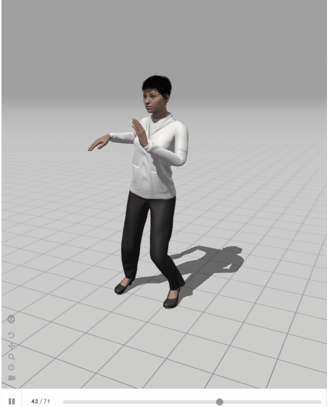

Orta Seviye
Sağ Dönüş (Right Turn)
⏱️ Ritim: 1 - 2 - 3Denge noktanızı koruyarak 2. vuruşta gövdenizi sağa doğru çevirmeye başlayın.

Ağırlık transferini ve kalça hareketini ritme uygun olarak kontrollü şekilde tamamlayın.
Denge noktanızı koruyarak 2. vuruşta gövdenizi sağa doğru çevirmeye başlayın.
Partnerli çalışmalarda esneklik ve hızlı merkez değişimi gerektiren karmaşık figür.